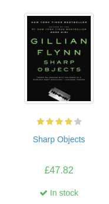

Easy Web Scraping with Python
Contents
Easy Web Scraping with Python#
This is partly motivated by an article published by Dario Radecic - the article is a good read.
The aim here is to show how to scrape pages easily in Python and share your results. We will be using two packages : requests-html for the web scraping, and streamlit to build a data application.
Our source for the scraping is books.toscrape.com. It is a good place to practise web scraping.
Our goal - Get the title, book url, thumbnail url, rating, price, and availability of each book per genre on the website. Roughly a thousand books. A sample image of one of the books is shown below.

To effectively scrape web pages, one needs to understand a bit of html and css. W3Schools is a good place to learn the fundamentals; we will not be dwelling on that here, just how to use it.
You can check the output of the web scraping here. You can access the complete python file as well.
Web Scraping#
requests-html makes web scraping easy. It supports both css-selectors and xpath; we will be using css-selectors. Let’s look at how to scrape the book titles in the Travel category:
from requests_html import HTMLSession
session = HTMLSession()
# url for travel section:
url = "http://books.toscrape.com/catalogue/category/books/travel_2/index.html"
# access data from url:
webpage = session.get(url)
titles = [element.attrs["title"] for element in webpage.html.find("h3>a")]
titles
["It's Only the Himalayas",
'Full Moon over Noah’s Ark: An Odyssey to Mount Ararat and Beyond',
'See America: A Celebration of Our National Parks & Treasured Sites',
'Vagabonding: An Uncommon Guide to the Art of Long-Term World Travel',
'Under the Tuscan Sun',
'A Summer In Europe',
'The Great Railway Bazaar',
'A Year in Provence (Provence #1)',
'The Road to Little Dribbling: Adventures of an American in Britain (Notes From a Small Island #2)',
'Neither Here nor There: Travels in Europe',
'1,000 Places to See Before You Die']
Pretty easy and straightforward. The key part is getting the css-selectors right.
Let’s write a function that gets the title, urls, and other details:
import pandas as pd
def data_extract(genre):
# pull data from specific webpage
webpage = genre_urls.get(genre)
webpage = session.get(webpage)
urls = [element.attrs["href"].strip("../")
for element in webpage.html.find("div.image_container>a")
]
titles = [element.attrs["title"] for element in webpage.html.find("h3>a")]
imgs = [element.attrs["src"].strip("../")
for element in webpage.html.find("div.image_container>a>img")
]
ratings = [element.attrs["class"][-1]
for element in webpage.html.find("p.star-rating")
]
prices = [element.text for element in webpage.html.find("p.price_color")]
availability = [element.text for element in webpage.html.find("p.instock")]
data = dict(
Title = titles,
URL = urls,
Source_Image = imgs,
Rating = ratings,
Price = prices,
Availability = availability,
)
return pd.DataFrame(data)
The function above pulls in the data and returns a Pandas dataframe.
What’s left is a pairing of the categories and the urls for each category for the entire website:
main_url = "http://books.toscrape.com/"
main_page = session.get(main_url)
# the css-selector helps pull out the links for all the categories (travel, horror, crime, ...)
navlinks = "div.side_categories>ul.nav.nav-list>li>ul>li>a"
# get the categories
genres = [element.text for element in main_page.html.find(navlinks)]
# get the actual urls for each category
genre_urls = [f"{main_url}/{element.attrs['href']}"
for element in main_page.html.find(navlinks)
]
# pair the category with the url
genre_urls = dict(zip(genres, genre_urls))
We can easily apply the data_extract function to any genre to get the entire details:
# view all the details for the Travel category
data_extract("Travel")
| Title | URL | Source_Image | Rating | Price | Availability | |
|---|---|---|---|---|---|---|
| 0 | It's Only the Himalayas | its-only-the-himalayas_981/index.html | media/cache/27/a5/27a53d0bb95bdd88288eaf66c923... | Two | £45.17 | In stock |
| 1 | Full Moon over Noah’s Ark: An Odyssey to Mount... | full-moon-over-noahs-ark-an-odyssey-to-mount-a... | media/cache/57/77/57770cac1628f4407636635f4b85... | Four | £49.43 | In stock |
| 2 | See America: A Celebration of Our National Par... | see-america-a-celebration-of-our-national-park... | media/cache/9a/7e/9a7e63f12829df4b43b31d110bf3... | Three | £48.87 | In stock |
| 3 | Vagabonding: An Uncommon Guide to the Art of L... | vagabonding-an-uncommon-guide-to-the-art-of-lo... | media/cache/d5/bf/d5bf0090470b0b8ea46d9c166f78... | Two | £36.94 | In stock |
| 4 | Under the Tuscan Sun | under-the-tuscan-sun_504/index.html | media/cache/98/c2/98c2e95c5fd1a4e7cd5f2b63c528... | Three | £37.33 | In stock |
| 5 | A Summer In Europe | a-summer-in-europe_458/index.html | media/cache/4e/15/4e15150388702ebca2c5a523ac27... | Two | £44.34 | In stock |
| 6 | The Great Railway Bazaar | the-great-railway-bazaar_446/index.html | media/cache/76/de/76de41867f323d7f1f4fbe2fdfc1... | One | £30.54 | In stock |
| 7 | A Year in Provence (Provence #1) | a-year-in-provence-provence-1_421/index.html | media/cache/db/46/db46159b05faa5d95262112bf9c2... | Four | £56.88 | In stock |
| 8 | The Road to Little Dribbling: Adventures of an... | the-road-to-little-dribbling-adventures-of-an-... | media/cache/e0/4f/e04f8eda2a2fa947aec17640202d... | One | £23.21 | In stock |
| 9 | Neither Here nor There: Travels in Europe | neither-here-nor-there-travels-in-europe_198/i... | media/cache/06/81/0681530a7bc301caf5c3257e1b0f... | Three | £38.95 | In stock |
| 10 | 1,000 Places to See Before You Die | 1000-places-to-see-before-you-die_1/index.html | media/cache/d7/0f/d70f7edd92705c45a82118c3ff6c... | Five | £26.08 | In stock |
Data extraction is complete. Next up is building an easy to use web application. Enter streamlit
Summary#
Web scraping and building data applications are easy to do in Python. Hopefully, this article gives you an idea of how to achieve this, the rest is up to you to go far and beyond.